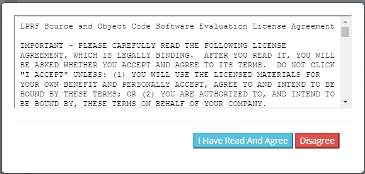

TI Z-Stack Quick Start Guide¶
This section serves as a roadmap for users developing applications and products using the TI SimpleLink™ CC13xx or CC26xx Wireless MCU platform using TI Z-Stack. Whether a seasoned developer or just getting started, TI has created a variety of resources to simplify development on the CC13xx or CC26xx platform. These resources will enhance your experience with the TI Z-Stack software from the example applications to production.
Figure 98. shows the suggested workflow for getting started with TI’s SimpleLink TI Z-Stack development environment.
Figure 98. Suggested Workflow¶
Using TI Z-Stack Projects with CCS¶
Importing TI Z-Stack projects into CCS will also import a README.html that
details the example application design, steps on running the example, and how
each example works.
Projects that contain Zigbee over-the-air (OTA) upgrade will also import the Boot Image Manager (BIM) into the workspace. For more information on OTA and the BIM see the Z-Stack User’s Guide.
For more details on TI Z-Stack example applications please see the Application Overview section of the Z-Stack User’s Guide.
Import Project Using Resource Explorer¶
A quick and easy way to start working with the SDK is to use the TI Resource Explorer in CCS.
This section describes how to import and build an existing project and references the zc_light project. All of TI Z-Stack projects included in the development kit have a similar structure.
Open the CCS IDE from the Start Menu.
Create a workspace.
Attention
Ensure that the CCS workspace path does not contain a whitespace.
Import a CCS Project using Resource Explorer
Open Resource Explorer (if not open already) View → Resource Explorer → Software → SimpleLink CC13xx/CC26xx SDK → Examples → Development Tools → CC13xx or CC26xx LaunchPad → Z-Stack → zc_light → TI-RTOS → CCS Compiler → zc_light
Select the CCS Logo button to import project into Project Explorer
Attention
The import process will also install the SimpleLink CC13xx/CC26xx SDK if a local version does not exist. You must accept the End User License Agreement to proceeed.
Figure 99. Install SimpleLink CC13xx/CC26xx SDK¶
After the installation finishes, you must reopen CCS before importing the project.
If everything is successful, the project should appear in Resource Explorer.
Import Project Using Import Wizard¶
Open CCS
Choose Project → Import CCS Projects from the menu.
Select the Browse button in the Import CCS Projects dialog and select the the directory
<SDK_INSTALL_DIR>/examples
Figure 100. CCS Import Wizard¶
CCS will automatically discover compatible examples.
Select the TI Z-Stack Example Project you would like to use. In this example, Light Coordinator Example is chosen. Click Finish to import the zc_light project.
Build and Download Project¶
Build the zc_light project.
Set the zc_light project as the active project. Make sure the Debug project configuration is used.
Select Project → Rebuild to build the project.
Set to erase all Flash memory
Navigate to Project → Properties → Debug → Flash Settings and select All Unprotected Sectors under Erase Settings during Program Load
This will ensure the NV memory from previous project builds is reset.
Load the zc_light project onto the device
Select Run → Debug to download the zc_light application.
Once the debugging session starts, click the red stop button
Before beginning execution, open a PuTTY terminal window with the following settings:
UART Param
Default Values
Baud Rate
115200
Data length
8 bits
Parity
None
Stop bits
1 bit
Flow Control
None
When the debugging session opens, click the Green start button to start
execution. Continue on to the README.html for information about using the
example application.
Useful CCS IDE Settings¶
The CCS provides a large number of configurable settings that can be used to customize the IDE and individual projects. The following examples do not alter the generated program code, but they can improve the developer’s experience when working with CCS projects. The CCS can reduce project compilation time by taking advantage of multiple processor cores on the development computer.
To use this feature, navigate to Project → Properties → Build → Builder and select Enable parallel build, as shown in Figure 101..
Figure 101. Project Properties for zc_light¶
Decreasing the Build → ARM Compiler → Optimization level to Interprocedure will also reduce compile times but may increase the code flash requirements. CCS users can control the amount of information that is displayed in the Console portion of the screen during project compilation and linking, ranging from Verbose to Super quiet. To change this setting, navigate to Window → Preferences → Code Composer Studio → Build and select an entry from the Console verbosity level drop-down, as shown in Figure 102.
Figure 102. Console Verbosity Level Preferences¶
Accessing Preprocessor Symbols¶
Throughout this document and in the source code, various C preprocessor symbols may need to be defined or modified at the project level. Preprocessor symbols (also known as Predefined Symbols) are used to enable and disable features and set operational values to be considered when the program is compiled. The preprocessor symbols are split between project specific preprocessor symbols and configuration header preprocessor symbols.
Project Specific Preprocessor Symbols¶
Configurations for a given example project are stored in CCS’s predefined symbols setting for that project.
In CCS, preprocessor symbols are accessed in the Project → Properties → CCS Build → ARM Compiler → Predefined Symbols. To add, delete, or edit a preprocessor symbol, use one of the icons shown in the red box in Figure 103..
Figure 103. Predefined Symbols Pane¶
A list of the preprocessor symbols which can be added or removed is located in Z-Stack User’s Guide: Developing Zigbee Applications → Application Overview
Other compile options taken from preinclude header files can be accessed by opening the appropriate Project Properties. Right click on the project in the Project Explorer and selecting Properties, then navigating to CCS Build → ARM Compiler → Include Options. To add, delete, or edit a preincluded files, use one of the icons shown in the red box in Figure 104..
Figure 104. Include Options Pane¶
Using TI Z-Stack Projects with IAR¶
When building with IAR, it is recommended to enable all build messages. This can be done by right-clicking in the Build window and selecting “All” as shown below:

Figure 105. Enable All Build Messages¶
Before starting to work with any of the TI Z-Stack projects in the SDK, you need to load a set of variables that will be set for your current workspace.
Select Tools -> Configure Custom Argument Variables
Figure 106. Configure Custom Argument Variables¶
Select the Global tab, then click Import..

Figure 107. Import Global Argument Variables¶
3. Import the custom argvars from the SDK. The argvars are stored in a SIMPLELINK_CC13XX_CC26XX_SDK.custom_argvars file, which is located in the
tools/iar directory of the SDK
(<SDK_INSTALL_PATH>/tools/iar/SIMPLELINK_CC13XX_CC26XX_SDK.custom_argvars)
Figure 108. Custom Argvars Location¶
4. You can open
(<SDK_INSTALL_PATH>/tools/iar/SIMPLELINK_CC13XX_CC26XX_SDK.custom_argvars)
in a text editor if you need to modify the default path argument variables.
Figure 109. Default Path Argument Variables¶
Restart IAR
Import Project Using Workspace¶
This section describes how to open and build an existing project and references the zc_light project.
Open the IAR Embedded Workbench IDE from the Start Menu.
Open an IAR workspace project: File → Open → Workspace and select <SDK_INSTALL_DIR>\examples\rtos\DEVICE _LAUNCHXL\zstack\zc_light\tirtos\iar\zc_light_DEVICE .eww
Note
After selecting, IAR will open a workspace from a template and save it in a new folder. It is important to create this IAR workspace folder directly inside the <SDK_INSTALL_DIR> in order for the project to build properly. Do not use spaces in the folder name.
This workspace file is for the zc_light project. When selected, the files associated with the workspace become visible in the Workspace pane on the left side of the screen.
Build and Download Project¶
Build the zc_light project.
Set the zc_light project as the active project. Make sure the Debug project configuration is used.
Select Project → Make to build the project.
Erase all Flash memory
Navigate to Project → Download → Erase memory
This will delete the NV memory from previous project builds.
Load the zc_light project
First choose Project → Options → Runtime Checking → Debugger → Driver from Emulator to TI XDS if debugging with Project → Download and Debug
To download without debugging: Select Project → Download → Download Active Application
When the download process is complete, you will see a message that the .out file was downloaded to flash memory in the Debug Log.
Before beginning execution, open a PuTTY terminal window with the following settings:
UART Param
Default Values
Baud Rate
115200
Data length
8 bits
Parity
None
Stop bits
1 bit
Flow Control
None
When the debugging session opens, click the start button to start execution.
See the README.html for information about using the example application.
Useful IAR IDE Settings¶
Accessing Preprocessor Symbols¶
Throughout this document and in the source code, various C preprocessor symbols may need to be defined or modified at the project level. Preprocessor symbols (also known as Predefined Symbols) are used to enable and disable features and set operational values to be considered when the program is compiled. The preprocessor symbols are split between project specific preprocessor symbols and configuration header preprocessor symbols.
Project Specific Preprocessor Symbols¶
Configurations for a given example project are stored in IAR’s Extra Options in the Project Options menu for that project. These are accessed by opening the project options by going Project → Options, in the options pane, go to C/C++ Compiler in the Extra Options tab as shown in Figure 110..
Figure 110. Extra Options to Define Preprocessor Symbols¶
The preprocessor symbols are added in a new line and are preceded by -D. For example:
to add the compile flag ZCL_READ, -DZCL_READ must be added as an extra option.
A list of the preprocessor symbols which can be added or removed is located in Z-Stack User’s Guide: Developing Zigbee Applications → Application Overview
The precompile files can be accessed by the same way as the preprocessor symbols in Figure 110.
Running the Demo¶
The Light & Switch Example refers to the example applications included as part of the TI Z-Stack. This is the first place where developers new to TI Z-Stack should start. These examples help developers to quickly get familiar with TI Z-Stack and with development tools such as CCS.
The TI Z-Stack example applications can be modified, built, downloaded, and debugged from the desktop version of CCS. With the Light & Switch Example running on two separate LaunchPads, you can quickly create a Zigbee network. The first LaunchPad™ will run the Light Coordinator Example. The second LaunchPad will run the Switch End Device Example. With this configuration, the switch will control the light.
Use CCS to import and build the two example applications. See Using TI Z-Stack Projects with CCS for instructions on importing, compiling and building TI Z-Stack examples. Refer to the example readmes referenced above for instructions on running the example applications. To view all example application readmes, refer to the Z-Stack User’s Guide.
Learning more about TI Z-Stack¶
Resources contained in the Learn track of Figure 98. are intended for users who are new to TI-RTOS. These modules demonstrate how to create custom applications with TI’s Real Time Operation System (TI-RTOS) which TI Z-Stack is based on.
SimpleLink Academy contains Z-Stack modules to help users learn the fundamentals of TI Z-Stack and how to develop a custom Zigbee product. TI-RTOS modules demonstrate the rich debug environment and peripheral driver capability provided by the RTOS. It also provides a comprehensive set of other training tools that allow users from beginners to experienced developers to learn about the SimpleLink MCU Platform.
TI-RTOS Kernel Workshop teaches users who are new to TI-RTOS or any RTOS programming in general about TI-RTOS kernel implementation. Modules within the kernel training greatly expand the information presented in the TI-RTOS overview section of the Z-Stack User’s Guide.
Learn how the TI-RTOS provides the most optimal power management and design flexibility with the TI-RTOS Power Manager Overview.
Developing a new TI Z-Stack Based Application¶
The develop track of Figure 98. is intended for programmers who are ready to start developing an end product using the CC13xx or CC26xx. To begin:
Download and install the SDK. The SimpleLink CC13xx/CC26xx SDK contains the TI-RTOS kernel, peripheral drivers and stacks needed with the TI Z-Stack.
Begin Development with an Integrated Development Environment (IDE). An IDE can be set up to make it easier to browse through the relevant projects and view code. All embedded software for the CC13xx or CC26xx is developed using TI’s Code Composer Studio on a Windows 7® or later PC. To begin development in CCS, jump to: Using TI Z-Stack Projects with CCS.
Complete the Project Zero SimpleLink Academy Lab The TI Z-Stack SimpleLink Academy includes a Project Zero Lab which helps introduce users to the SimpleLink CC13xx/CC26xx SDK and Zigbee basics through step-by-step instructions for programming LaunchPads, setting up a Zigbee Network, and sniffing OTA messages.
Get Familiar with the Z-Stack User’s Guide. The Z-Stack User’s Guide is meant to be used alongside the TI Z-Stack when developing an end product. It contains documentation on the stack architecture, APIs, and suggestions for developing applications.
Select an Example Project. TI Z-Stack includes a basic set of projects to use as a starting point for development of your custom application. To view examples applications available in TI Z-Stack, refer to the Z-Stack User’s Guide.
Troubleshooting Help. While developing your custom application, you may run into issues that require the use of packet sniffer software or IDE debugger. The Debugging chapter of the Z-Stack User’s Guide provides help with configuring your debugger and understanding common problems while the Packet Sniffer chapter explains how to run software for recording OTA activity.
Enhance Your Project¶
The enhance track of Figure 98. is intended to take your product to the next level by leveraging TI’s web-based collateral. Additional resources found in these pages include application-specific source code examples and complete sub-system designs. Examples of system designs with complete hardware and software examples using the CC13xx or CC26xx are contained in TI Designs.
The Zigbee Resource Guide is a magazine-style guide with products, applications, and solutions for end-users.
Getting Support¶
The support track is intended to provide you additional help and resources that aren’t contained in the previous tracks.
E2E™ is a support community providing answers to questions relating to the TI Z-Stack and the CC13xx or CC26xx. You can browse questions from other developers or ask your own questions if you run into issues developing with the TI Z-Stack.